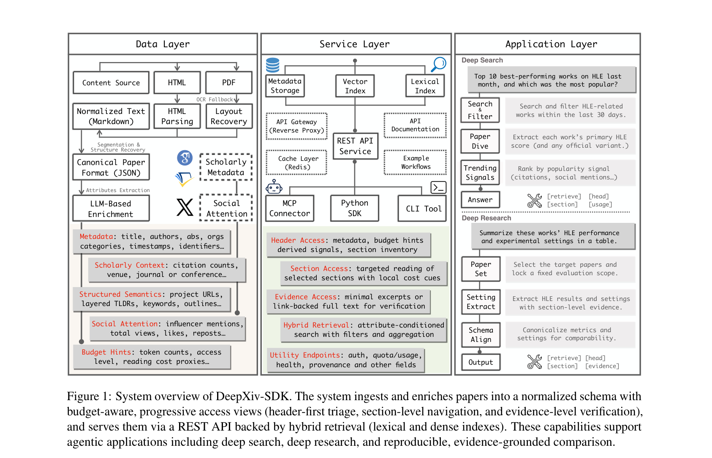
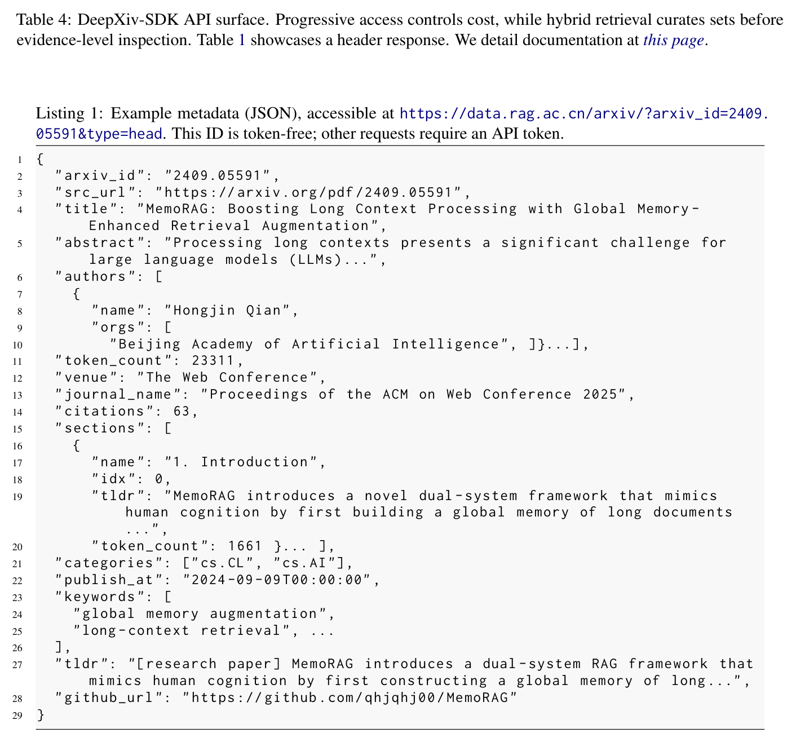
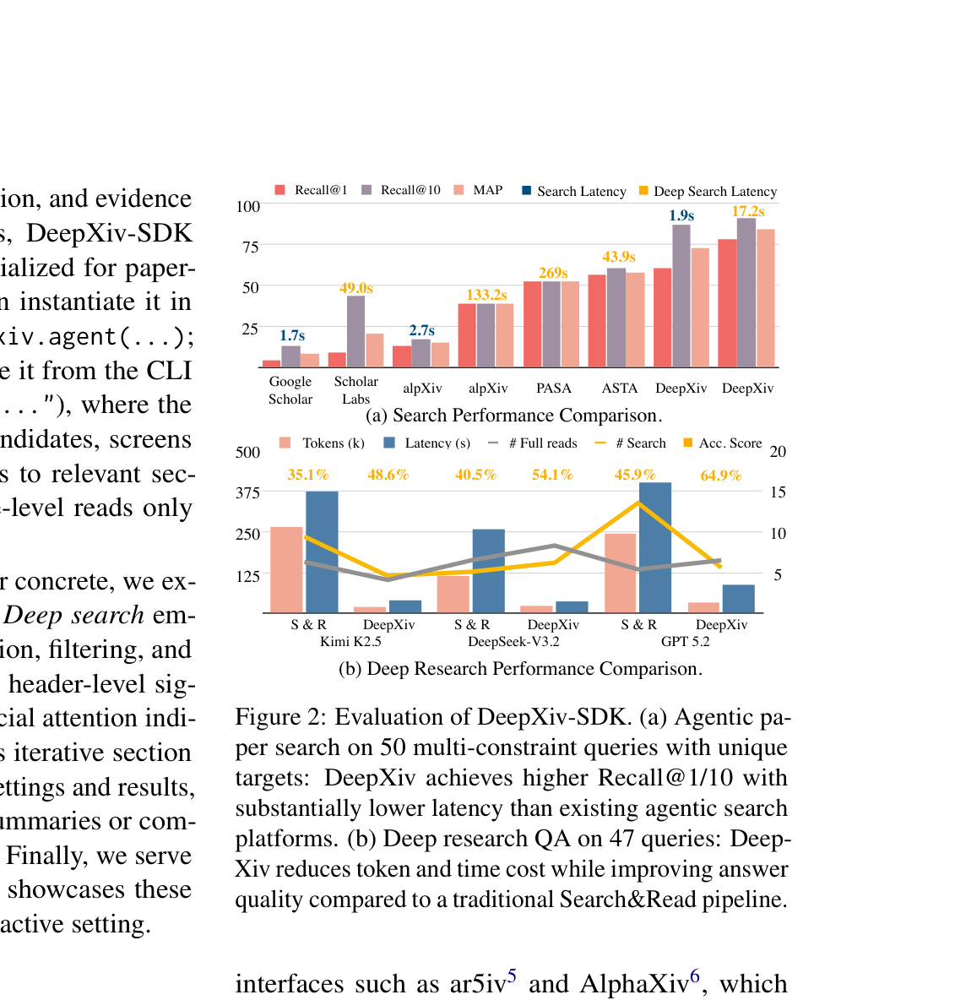
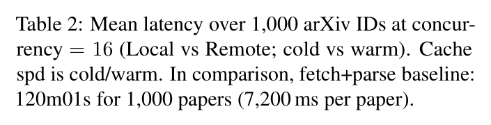

覆盖范围
arXiv 全量语料，每日同步新发布；计划扩展 PubMed Central、bioRxiv、medRxiv、chemRxiv。
工程侧被真实使用，学术侧尚未被承认 —— 一个"基础设施论文"的典型分裂画像。
核查结论（2026-08-03）：学术引用层面认可度很低 —— Semantic Scholar 2 次引用、OpenAlex 0 次、influential citations 0，且两篇引用它的论文本身都是未评审预印本，所以严格说它目前零篇经同行评审的文献引用。工程使用层面认可度明显更高 —— 763 stars、月下载 8,683、conda-forge 已建、约 20 个下游仓库在用。而且两次引用都不是背书：一次把它当 baseline 打，一次把它当反面靶子。
论文的核心论点：LLM agent 做科研的真正瓶颈是数据接入，不是推理 —— agent 缺现成检索工具，被迫解析 HTML/PDF 这类给人看的格式，既烧 token 又让证据定位变脆。

arXiv 全量语料，每日同步新发布；计划扩展 PubMed Central、bioRxiv、medRxiv、chemRxiv。
持久化多种物化视图（overview / section / evidence 三种粒度）+ provenance 字段（来源类型、抽取时间、更新时间），按需取粒度以控成本。
仅取 arXiv 描述性元数据（标题/作者/摘要/分类/时间戳），依据 arXiv API 条款 —— e-print 元数据为 CC0 1.0。

assets/openapi_snapshot_2026-08-02.json 对照，看线上实际接口是否还与论文一致。
论文原文：50 multi-constraint queries "each mapped to a single target paper (unique answer)"，指标是 Recall@1/10。也就是说，DeepXiv 自评的是"把那一篇找出来"的导航式精度任务。记住这一点 —— 第 5 节会看到，它在第三方评测里的"失败"其实主要是被换到了一个相反的任务口径上。
它自报的另一组数字是效率：相比"下载 PDF 再转 Markdown"的基线（8×A100，全流程 120m01s / 7.20s 每篇），DeepXiv 的端到端加速为 54.6×（Local）/ 39.6×（Remote）（warm 缓存）。deep research 侧的说法是"避免默认全文摄入、用结构化可按节寻址的接口替代脆弱的页面解析"，从而同时降工具成本与延迟。

以下均为 2026-08-02/03 实测，非二手转述。
| 指标 | 数值 | 来源 |
|---|---|---|
| Semantic Scholar 引用 | 2 | Graph API paperId 6000f045… |
| S2 influential citations | 0 | 同上 |
| OpenAlex 引用 | 0（收录更滞后） | doi:10.48550/arXiv.2603.00084 |
| venue | 无，OpenAlex type = preprint | 同上 |
容易误解：DBLP 上的 journals/corr/abs-2603-00084 与 OpenReview 上的 "CoRR 2026" 条目都不是发表记录。CoRR = Computing Research Repository，即 arXiv 的 CS 分区；journals 只是 DBLP 的内部目录名，没有编委会、没有审稿。那个 2026 是上传年份。
| 指标 | 数值 |
|---|---|
| GitHub stars / forks | 763 / 42（MIT，创建 2026-02-08） |
| PyPI 下载 | 月 8,683 · 周 1,893 · 日 152（v0.3.1，9 个 release） |
| 分发渠道 | PyPI + conda-forge feedstock 已建 |
| 下游代码引用 | 约 20 个仓库，含 ResearAI/DeepScientist、多个 academic-MCP server、一批 Claude/OpenClaw skill 封装、conda-forge/deepxiv-sdk-feedstock |
合理推断 这个分裂不难解释：通讯作者 Zheng Liu 是 BGE 系列作者，该组开源工具自带用户基础；而工具类论文的引用天然滞后，且大量用户是直接 pip install，不会去引论文。
两篇引用它的论文都不是自引，而且来自很强的组，这点是正面信号。但读了全文之后，语境是负面或中性的。
§4.1 一句话把它与 Google/Google Scholar/S2 API 并列成"外部学术搜索系统"，附录 A.2 一行注释 "An external scientific literature search interface"，然后就是 Table 2 一行数字。Related Work 零提及，正文没有任何一句讨论它的机制或结果。
成绩：R@25 0.054（全表最低） / R@100 0.138 / R@All 0.288。
最扎心的是：ScholarQuest 自己造 benchmark 时用的是 arXiv API + Semantic Scholar API + serper，没有用 DeepXiv。一篇论文把某系统当 baseline 评测、却在需要可靠数据源时绕开它 —— 这比给个低分更能说明它在同行眼里的定位。
两次引用都是裸 \citep，都紧跟同一句批评。Intro 原文：
"Some deep-research-based agentic frameworks attempt to compensate for the deficiency of structured information through iterative knowledge search and integration [wispaper, deepxiv, alphaxiv, opensholar]."
"However, this approach not only incurs high computational costs and response latency but also, due to the absence of deterministic cognitive maps as anchors for LLMs, renders them highly susceptible to logical hallucinations…"
§6.2 Related Work 同样结构、同样批评句。不是数据源、不是对比系统、不在 pipeline 里 —— 纯粹是"迭代搜索路线成本高、延迟高、易幻觉"的论据支撑。
没有任何一篇把它当基础设施依赖 —— 而这恰恰是论文自我定位（"agentic data interface"）最想要的那种认可。763 stars 和 8.7k/月下载在被下游 agent skill 生态消费，但学术论文在需要可靠数据源时选的是 arXiv API / S2 API / OpenAlex。
把两边的数字并排看，会得出一个两篇论文都没说的结论。
| 评测 | 任务口径 | 金标规模 | DeepXiv 表现 |
|---|---|---|---|
| 论文自评（Fig. 2a） | 导航式：找出那一篇 | 每条查询 1 篇唯一答案 | Recall@1/10 优于 Google Scholar / PaSa / ASTA，延迟显著更低 |
| ScholarQuest（Table 2） | 穷尽式：把整个集合找全 | 每条查询 5–200 篇 | R@25 0.054（全表最低）、R@All 0.288（≈ 稠密检索 0.290，是其他外部 API 的 2.5 倍） |
合理推断 R@All 0.288 说明它的 agent 确实把大量金标论文捞进了候选池（召回能力接近专门的稠密检索）；R@25 0.054 说明它完全没把它们排到前面。这与它自评任务是"唯一答案 + Recall@1/10"高度一致：系统是为"命中那一篇"调的，不是为"枚举一个集合并排好序"调的。
但这不能全算脱罪。对一个主打"给 agent 用的数据接口"的系统，排序失效是致命的 —— agent 的上下文装不下 300 篇，它必须依赖接口把最相关的放在前面。而且 scope-controlled（排除约束）那一档它的 R@25 是 0.007，接近完全失效。
审计发现 ScholarQuest 对这个反差一个字都没分析；DeepXiv 自己的 Limitations 里也没有"排序 / 集合枚举"这一项。
维护有放缓迹象。repo 最后一次 push 是 2026-05-22，PyPI 最新版 0.3.1 同日，至今约 2.5 个月无更新。而论文核心卖点之一是"arXiv 全量 + 每日同步"以及"后续扩展 PubMed Central / bioRxiv"。一个宣称 daily sync 的托管服务停更两个多月 —— 如果要把它作为依赖，先自己验 data.rag.ac.cn 的数据新鲜度和接口可用性，别信论文里的 daily。
有真服务、真 SDK、真用户，不是空仓库论文。但也不是方法创新 —— 是基础设施 / 竞品交叉品。
是「文献数据接入层」的一个可复用依赖或需要对标的对象，而不是算法层面的对手。引用它成本很低、收益也低（引用数说明学界还没把它当必引基线）。
如果关心"给 agent 的标准化文献工具环境"这条线，参照点是 AstaBench（ICLR 2026, AI2）而不是 DeepXiv —— 不过 Asta 的语料不可自托管，两者各有硬约束。
证据等级说明。论文声称 来自本地 PDF 与 assets/2603.00084_fulltext.md；引用/下载/star 数为 2026-08-02 实测（Semantic Scholar Graph API、OpenAlex API、GitHub API、pypistats）；审计发现 为对两篇施引论文全文（含 SciAtlas 的 LaTeX 源码，因其 arXiv HTML 参考文献渲染为空）逐句核对后的认定；合理推断 为跨论文比较得出、两篇论文均未言明。
提醒：引用数据库有 1–3 个月滞后，Google Scholar 口径通常略高于 S2（本次未能取到 GS 数据），故真实引用可能是个位数偏高一点，但不改变"引用尚未起量"的判断。
归档日期：2026-08-03 · 论文版本 v2（2026-03-03）· Fig*/Table*_p*.png 由本地 PDF 按图注区域裁切；fig1_architecture.png / fig2_evaluation.png 为先前归档的同源图片。